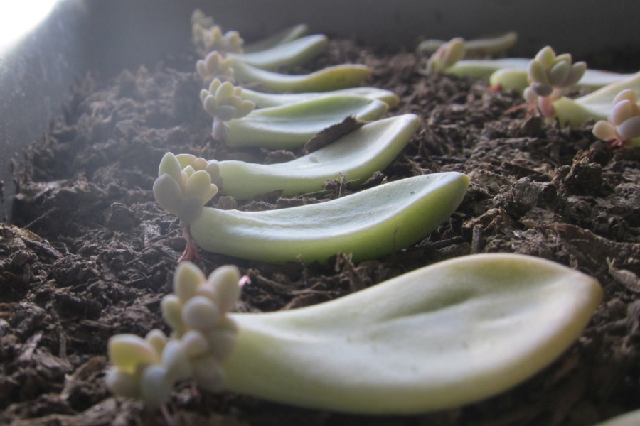
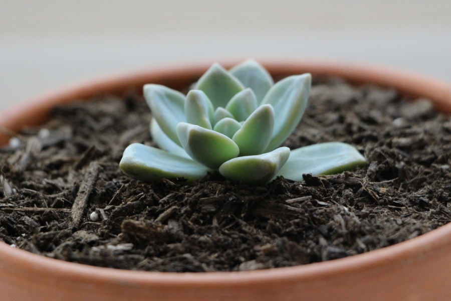
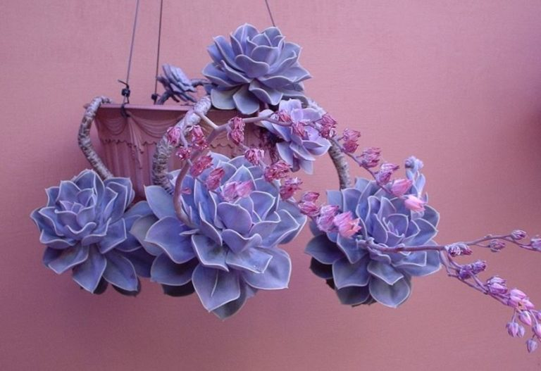
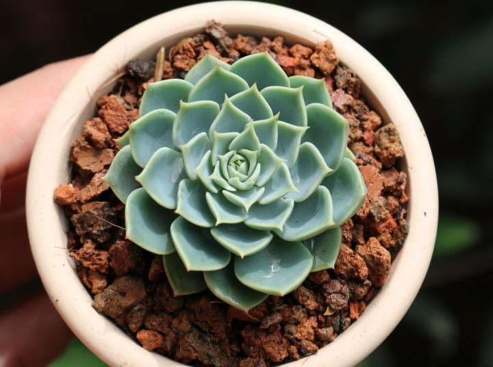
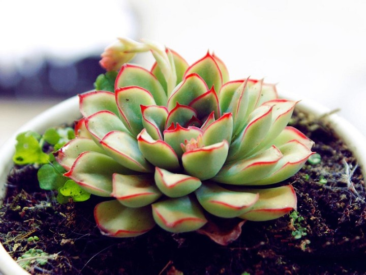
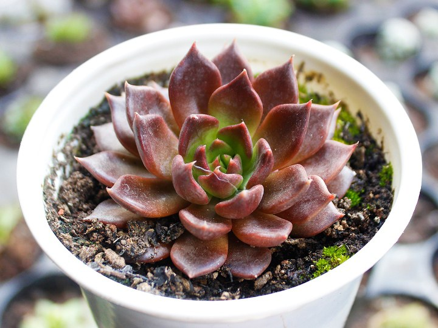

Những mầm sen đá này được lấy từ những cây sen đá trưởng thành sau đó đem đi phơi khô, sau đó đặt lá sen đá
vào
chậu đất đã chuẩn bị sẵn với độ ẩm phù hợp, từ đó rễ sẽ phát triển và cắm xuống đất. Tưới nước nếu đất khô
hẳn,
để tránh đọng nước trên lá gây thối nhũn thì nên sử dùng bình phun sương.
Những mầm sen đá này được lấy từ những cây sen đá trưởng thành sau đó đem đi phơi khô, sau đó đặt lá sen đá
vào
chậu đất đã chuẩn bị sẵn với độ ẩm phù hợp, từ đó rễ sẽ phát triển và cắm xuống đất. Tưới nước nếu đất khô
hẳn,
để tránh đọng nước trên lá gây thối nhũn thì nên sử dùng bình phun sương. Để ở nơi khô thoáng và tránh nắng
gắt
trực tiếp từ mặt trời vì cây con khi mới mọc sẽ rất yếu.Nhân giống bằng cách ươm lá nghe có vẻ đơn giản, nhưng
không dễ dàng đến mức chỉ cần ngắt lá hoa đá và đặt xuống đất thì lá sẽ tự mọc rễ và sau đó có cây con khoẻ
mạnh.Ưu tiên những cây khoẻ mạnh, trưởng thành và không mắc bệnh để ngắt lấy lá. Những cây bị mọc cao do thiếu
nắng hoặc dáng cây không còn đẹp.


Khi cây con đã hoàn toàn cứng cáp thì lá sẽ héo dần, đến khi lá héo hẳn thì bạn có thể tách ra
hoặc để lá mẹ tự
rụng. Lúc này cây con có thể tiếp xúc dần với nắng nhẹ. Tiếp theo cho cây con vào từng chậu thích hợp để cây
có
thể phát triển.
Khi cây con đã hoàn toàn cứng cáp thì lá sẽ héo dần, đến khi lá héo hẳn thì bạn có thể tách ra hoặc để lá mẹ
tự
rụng. Lúc này cây con có thể tiếp xúc dần với nắng nhẹ. Tiếp theo cho cây con vào từng chậu thích hợp để cây
có
thể phát triển. Tuỳ thuộc vào
điều kiện nắng, gió và độ ẩm nơi trồng mà bạn có thể điều chỉnh thời gian và lượng nước tưới cho phù hợp. Việc
để cho đất khô hẳn rồi tưới giúp kích thích rễ cây phát triển rất tốt nhất.Khi cây con đã hoàn toàn cứng cáp
thì
lá sẽ héo dần, đến khi lá héo hẳn thì bạn có thể tách ra hoặc để lá mẹ tự rụng. Lúc này cây con có thể tiếp
xúc
dần với nắng nhẹ. Bạn cũng có thể tận dụng phần thân dưới gốc, đặt chậu cây ở
nơi khô thoáng, tránh nắng gắt và chờ đợi đến khi cây con mọc ra.
Sen đá dễ trồng và phù hợp với cái nóng oi bức, tù túng nơi phố thị, sen đá rất đa dạng và phong phú về
màu sắc cũng như hình dáng lá. Cũng có lẽ vì thế mà sen đá chính là biểu trưng cho sự son sắt; vĩnh cửu bền
chặt
trong tình bạn, tình yêu nên rất được giới trẻ ưa chuộng.
Sen đá dễ trồng và phù hợp với cái nóng oi bức, tù túng nơi phố thị, sen đá rất đa dạng và phong phú về
màu sắc cũng như hình dáng lá. Cũng có lẽ vì thế mà sen đá chính là biểu trưng cho sự son sắt, vĩnh cửu bền
chặt
trong tình bạn, tình yêu nên rất được giới trẻ ưa chuộng. Mỗi khi ngắm nhìn sen đá, bạn sẽ có cảm giác thư
thái
và bình yên. Sen đá được trang trí ở không gian bàn làm việc tạo cảm giác thoải mái, được trang trí ở các hàng
quán cà phê để tạo không gian gần gũi, hòa mình với thiên nhiên. Chúng ta có thể tận dụng bình trà, khoan lỗ
thoát nước và vẽ lên thân chậu theo sở thích của mình hoặc bỏ vào những lồng thủy tinh trong suốt tạo thành 1
khu vườn thu nhỏ mà chúng ta có thể nhìn ngắm ở mọi góc cạnh.


Sen thái
Sen thái hay còn gọi là sen đá xanh, là loại sen phổ thông được nhiều người yêu thích. Cây sẽ đạt
kích thước
5-7cm nếu được trồng và chăm sóc thích hợp. Lá cây hình ngũ giác, cong nhẹ và có lớp phấn mỏng màu trắng trên
bề
mặt lá.
Sen thái hay còn gọi là sen đá xanh, là loại sen phổ thông được nhiều người yêu thích. Cây sẽ đạt kích thước
5-7cm nếu được trồng và chăm sóc thích hợp. Lá cây hình ngũ giác, cong nhẹ và có lớp phấn mỏng màu trắng trên
bề
mặt lá.
Không chỉ dễ trồng, sen đá thái còn dễ nhân giống cây con từ lá mẹ. Với sức sống mãnh liệt như vậy, sen đá
xanh
mang ý nghĩa của sự vĩnh cửu và trường tồn mãi mãi theo thời gian trong tình bạn hay tình yêu.
Không thể phủ nhận những lợi ích của sen đá mang lại, không chỉ đẹp và được dùng làm cây cảnh trang trí mà sen
đá còn là món quà tặng cực kì ý nghĩa gửi tặng những người thân thiết.
Sen đá viền đỏ
Sở hữu những cánh hoa dài mượt mà, kết hợp với viền lá màu đỏ bắt mắt hay hồng xinh xắn, sen đá viền hồng chắc
chắn sẽ cuốn hút bạn ngay từ cái hình đầu tiên. Cây có thể đạt kích thước 7-10cm khi trưởng thành, lá cây mọc
đan xen, tầng tầng lớp lớp tựa như bông hoa đang khoe sắc vô cùng rực rỡ.
Sở hữu những cánh hoa dài mượt mà, kết hợp với viền lá màu đỏ bắt mắt hay hồng xinh xắn, sen đá viền hồng chắc
chắn sẽ cuốn hút bạn ngay từ cái hình đầu tiên. Cây có thể đạt kích thước 7-10cm khi trưởng thành, lá cây mọc
đan xen, tầng tầng lớp lớp tựa như bông hoa đang khoe sắc vô cùng rực rỡ.
Chăm sóc sen đá viền đỏ cũng không hề khó khăn, cây với kích thước vừa vặn cũng không tốn nhiều diện tích, rất
phù hợp để trang trí góc học tập hay làm việc thêm tươi mát.Cây sen đá viền lửa thường được dùng làm cây trang
trí trong văn phòng, bàn làm việc, đặt gần kệ cửa sổ, làm tiểu cánh sân vườn. Hơn thế nữa, với màu sắc thu hút
ánh nhìn, Sen Đá Viền Đỏ còn được dùng để tạo nên bức tranh cây treo tường rất đẹp, có tính nghệ thuật cao.


Sen đá nâu
Là một trong những loại hoa đá có màu sắc đặc biệt, cây sen đá nâu hay còn gọi là sen socola vì sở hữu tông
màu
đỏ nhạt, nâu hay tím than vô cùng lạ mắt. Khi trưởng thành, cây có kích thước trung bình từ 5 đến 7cm, lá dày
cứng cáp và nhọn dần về phía đầu, mọc xoay đều quanh thân tựa đài sen.
Là một trong những loại hoa đá có màu sắc đặc biệt, cây sen đá nâu hay còn gọi là sen socola vì sở hữu tông
màu đỏ nhạt, nâu hay tím than vô cùng lạ mắt. Khi trưởng thành, cây có kích thước trung bình từ 5 đến 7cm, lá
dày cứng cáp và nhọn dần về phía đầu, mọc xoay đều quanh thân tựa đài sen. Cây sẽ còn đẹp hơn khi nở rộ những
bông hoa màu đỏ dạng chùm rực rỡ.
Sen đá socola chịu hạn tốt, do đó bạn nên đặt cây gần nơi có ánh sáng hoặc tắm nắng cho cây mỗi ngày 3-4 tiếng
để cây sinh trưởng và phát triển thật tốt, cũng như lên màu thật đẹp.
Ý nghĩa sen đá nâu cũng “đậm đà” như màu sắc của chúng, vì sen chocolate tượng trưng cho một tình bạn cao đẹp,
một tình yêu chung thuỷ và bền chặt theo thời gian.
Vừa đẹp lại vừa ý nghĩa, nên xu hướng dùng sen đá để trang trí tiệc cưới đang rất được các cặp đôi ưa chuộng.